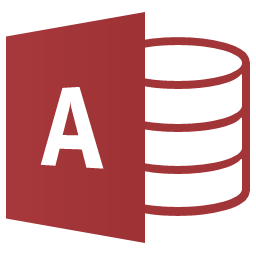
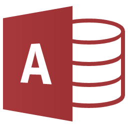

Principaux SGBDR - MySQL

SGBDR le plus utilisée pour le développement web. Il est notamment mis en place sur des sites internet tels que Wikipedia, Facebook, Google ou Twitter et par les CMS les plus populaires (Wordpress, Drupal, Joomla…).


 
